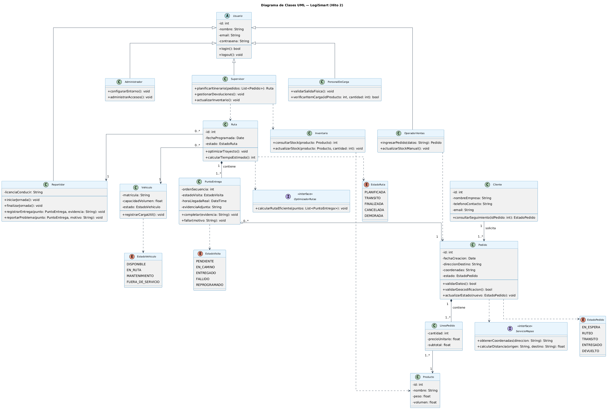
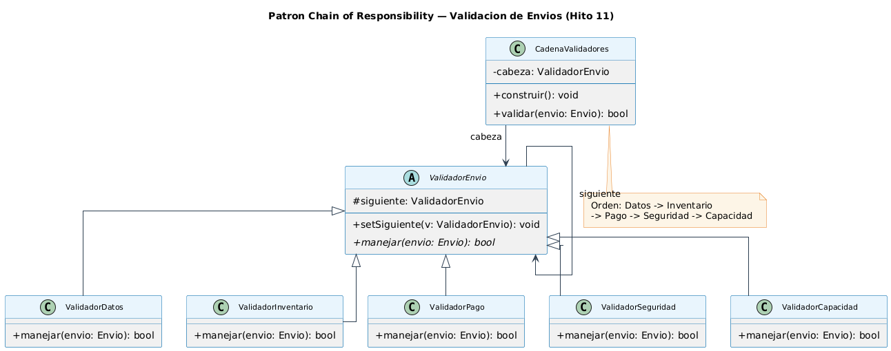
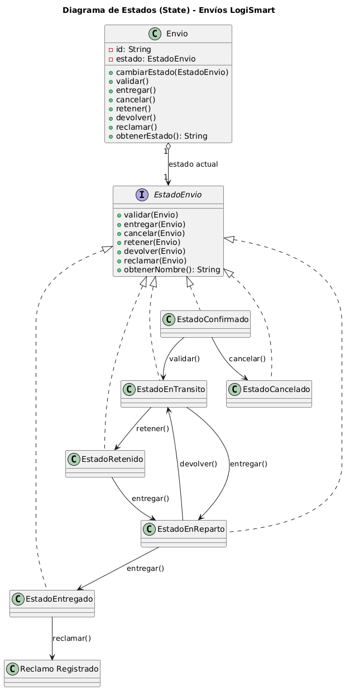
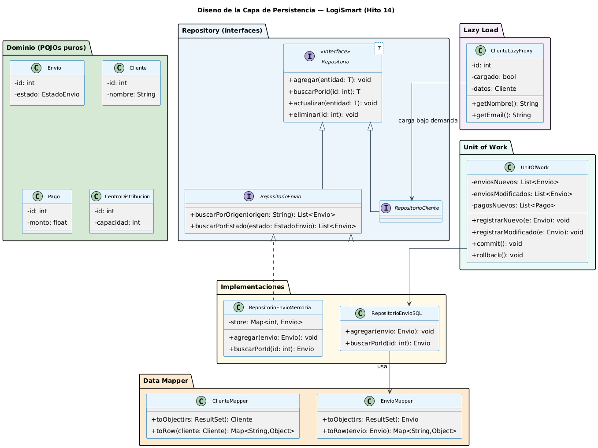

LogiSmart
Plataforma SaaS de optimización logística para PyMEs. Una respuesta arquitectónica a un RFP de última milla.
Grupo Última Fila · Churba · Díaz Valdez · Noblia
El problema no era “hacer un sistema”: era responder restricciones no negociables.
SLA
Alta disponibilidad con balanceo, failover y escalado horizontal.
Seguridad
Zero Trust, aislamiento de tenant y cifrado AES-256.
Escala
Microservicios preparados para crecer por módulo y demanda.
Offline
La app móvil debía operar con señal intermitente en ruta.
Cada diagrama que sigue responde a un riesgo concreto.
El tribunal actúa como comité evaluador del cliente. Por eso defendemos decisiones, tradeoffs y supuestos.
Mapas y tráfico pueden caer
Respuesta: interfaces + adapters + flujo manual de validación.
Direcciones argentinas imperfectas
Respuesta: normalización y geocodificación antes de planificar.
Zonas con baja cobertura móvil
Respuesta: eventos offline persistidos y sincronizados.
Riesgo de filtrado entre PyMEs
Respuesta: isolation lógica + pruebas por tenant.
SaaS multi-tenant porque las PyMEs no pueden comprar infraestructura enterprise.
Problema
PyMEs con 1–20 vehículos necesitan optimizar última milla sin CAPEX.
Decisión
Modelo SaaS por suscripción con separación lógica por tenant.
Tradeoff
Menor costo operativo, más complejidad de aislamiento.
Mitigación
Pruebas de penetración tenant-to-tenant desde el inicio.
No diseñamos para una empresa: diseñamos una plataforma reusable para muchas PyMEs.
Los casos de uso se presentan como valor operativo, no como checklist.
Rutas y devoluciones
CU-05 optimiza itinerarios. CU-12 da visibilidad sobre reingresos.
Campo offline
CU-07 y CU-08 registran entregas, evidencias y problemas en ruta.
Tracking sin llamadas
CU-10 permite consultar el estado del envío en tiempo real.
Ingreso centralizado
CU-03 soporta API, Excel o carga manual con validación.
El modelo refleja cómo opera la logística real.
PuntoEntregarepresenta una visita, no el pedido completo.Vehiculopertenece a la ruta de la jornada.Clientequeda fuera deUsuariopor seguridad conceptual.ServicioMapasyOptimizadorRutasson interfaces.

PuntoEntrega existe porque un intento de entrega tiene vida propia.
Problema
Un pedido puede fallar, reprogramarse y tener varias visitas.
Decisión
Separar Ruta → PuntoEntrega → Pedido.
Ganamos
Trazabilidad por intento, evidencia y hora real por visita.
Pagamos
Una clase extra y navegación más larga.
La evidencia no pertenece al pedido: pertenece al intento de entrega.
Vehiculo asociado a RutaCliente fuera de UsuarioSupervisor con deuda controladaGestorDevoluciones.No se defienden 20 patrones: se defienden los que compran más arquitectura.
Constructor telescópico
Envios con atributos opcionales se construyen paso a paso y validan invariantes.
Regionalización
Argentina y Brasil crean familias de vehículo, costo y mapas sin if/else.
Servicios opcionales
Seguro, rastreo, prioridad y notificaciones sin 16 subclases.
Proveedores externos
DHL, FedEx, pagos y mapas hablan una interfaz interna uniforme.
Reportes flexibles
Tipo de reporte separado del formato: PDF, Excel, JSON o CSV.
Red logística
Centros nacionales, regionales y puntos se recorren uniformemente.
Los patrones de comportamiento protegen reglas que van a cambiar.
- Chain of Responsibility: validaciones ordenadas y extensibles.
- State: transiciones del envío sin switch gigante.
- Strategy: tarifas intercambiables por política comercial.
- Command: acciones offline encolables y reproducibles.


“¿No era más fácil un enum + switch?”
Sí, para 2 estados.
Pero LogiSmart tiene seis estados con transiciones distintas: confirmado, en tránsito, en reparto, entregado, retenido y cancelado.
No, para lógica evolutiva.
State mantiene la regla cerca del estado. Agregar RetenidoPorAduana agrega una clase; no modifica un switch central.
El patrón cuesta clases; compra Open/Closed y reduce el crecimiento cuadrático de condicionales.
El hito crítico: cruzar objetos puros con una base relacional sin ensuciar el dominio.
Las entidades Envio, Cliente, CentroDistribucion y Pago no contienen SQL ni anotaciones de infraestructura.

La arquitectura responde a operación real, no a un escenario ideal de laboratorio.
Eventos locales
Entrega, problema y evidencia se guardan localmente y se sincronizan al recuperar conexión.
Datos protegidos
Persistencia local encriptada para no exponer datos operativos del repartidor.
Reproducción segura
Las acciones offline se modelan como comandos encolados y auditables.
La app no falla porque se corta la señal: degrada a modo local y conserva evidencia.
NotificadorWhatsApp implementando la interfaz; el controlador no cambia.GestorDevoluciones. Es deuda declarada, no sorpresa.Lo que demostramos: cada patrón pagó su complejidad con una restricción del RFP.
Cambiar proveedor, motor de BD o región no toca el núcleo.
Escalado horizontal y módulos separables para demanda variable.
Tenants aislados, Zero Trust y datos offline cifrados.
Tradeoffs y deuda técnica reconocidos explícitamente.
No implementamos patrones para cumplir un checklist; los usamos donde el problema justificaba el costo.